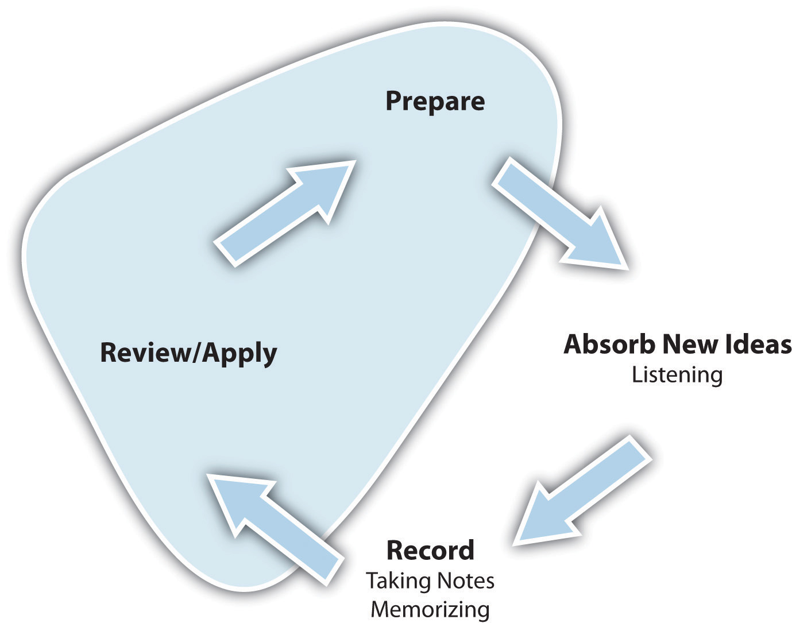

Assess your present knowledge and attitudes.
| Usually | Sometimes | Seldom | |
|---|---|---|---|
| 1. I do well on exams. | |||
| 2. Exams make me very nervous and anxious. | |||
| 3. I study for exams at the last minute. | |||
| 4. I feel confident going into tests or exams. | |||
| 5. When we get pop quizzes, I do OK. | |||
| 6. I remember what I’ve studied long after studying for an exam. | |||
| 7. I am overwhelmed by the amount of material I have to study for an exam. | |||
| 8. I run out of time when taking exams. | |||
| 9. I write good responses to essay questions. | |||
| 10. I “draw a blank” during an exam on material I know. | |||
| 11. I have trouble really understanding what the instructor is looking for on a test. | |||
| 12. I lose points for stupid mistakes. |
Think about how you answered the questions above. Be honest with yourself. On a scale of 1 to 10, how would you rate your preparation for tests at this time?
| Prepare for tests poorly | Prepare for tests well | |||||||||||||||||
|---|---|---|---|---|---|---|---|---|---|---|---|---|---|---|---|---|---|---|
| 1 | 2 | 3 | 4 | 5 | 6 | 7 | 8 | 9 | 10 | |||||||||
On a scale of 1 to 10, how would you rate your test-taking skills at this time?
| A poor tester | An excellent tester | |||||||||||||||||
|---|---|---|---|---|---|---|---|---|---|---|---|---|---|---|---|---|---|---|
| 1 | 2 | 3 | 4 | 5 | 6 | 7 | 8 | 9 | 10 | |||||||||
In the following list, circle the three most important areas in which you think you can improve:
Are there other areas in which you can improve your test preparation and test taking? Write down other things you feel you need to work on.
__________________________________________________________________
__________________________________________________________________
__________________________________________________________________
Here’s what we’ll work on in this chapter:
Testing is a part of life. Have you ever participated in an athletic event? Completed a crossword puzzle? Acted in a play? Cooked dinner? Answered a child’s question? Prepared a cost estimate? All of these common life situations are forms of tests because they measure how much we know about a specific subject at a single point in time. They alone are not good measurements about how smart or gifted you are—they show only how much you know or can do at that moment. We can learn from how we have performed, and we can think about how to apply what we have learned to do even better next time. We can have fun measuring our progress.
Many of our daily activities are measurements of progress toward mastery of skills or knowledge. We welcome these opportunities as both work and fun. But when these opportunities are part of our academic life, we often dread them and rarely feel any sense of fun. In reality, however, academic tests are similar to real-life tests in the following ways:
Academic tests in college are different from those you took in high school. College instructors expect to see much more of you in an exam: your thoughts, your interpretations, your thinking process, your conclusions. High school teachers usually look for your ability to repeat precisely what you read in your text or heard in your class. Success on high school tests relies much more on memorization than on understanding the material. This is why you need to modify your study habits and your strategies for taking exams in college.
Take a look at the learning cycle in Figure 6.2 "The Learning Cycle: Review and Apply". In this chapter, we cover reviewing and applying the material you learn; preparing for and taking exams is the practical application of this phase.
Figure 6.2 The Learning Cycle: Review and Apply
The end and the beginning of the learning cycle are both involved in test taking, as we’ll see in this chapter. We will discuss the best study habits for effective review and strategies for successful application of your knowledge in tests and exams. Finally, we will cover how the review and application processes set you up for additional learning.
Let’s start at the top of the cycle. You have invested your time in preparing for class, you have been an active listener in class, and you have asked questions and taken notes. You have summarized what you learned and have looked for opportunities to apply the material. You have completed your reading assignments and compared your reading notes with your class notes. And now you hear your instructor say, “Remember the exam next week.”
A sense of dread takes over. You worry about the exam and what might be on it. You stay up for a couple of nights trying to work through the volumes of material the course has covered. Learning or remembering it all seems hopeless. You find yourself staring at the same paragraph in your text over and over again, but you just don’t seem to get it. As the exam looms closer, you feel your understanding of the material is slipping away. You show up to the exam and the first questions look familiar, but then you draw a blank—you’re suffering from test anxiety.
Take the true-or-false quiz below (circle T for true or F for false). There are no wrong answers.
| T | F | I have a hard time starting to study for a test. |
| T | F | When studying for an exam, I feel desperate or lost. |
| T | F | When studying for an exam, I often feel bored and tired. |
| T | F | I don’t sleep well the night before an exam. |
| T | F | My appetite changes the day of the exam. (I’m not hungry and skip meals or I overeat—especially high-sugar items like candy or ice cream.) |
| T | F | When taking an exam, I am often confused or suffer mental blocks. |
| T | F | When taking an exam, I feel panicky and my palms get sweaty. |
| T | F | I’m usually in a bad mood after taking an exam. |
| T | F | I usually score lower on exams than on papers, assignments, and projects. |
| T | F | After an exam, I can remember things I couldn’t recall during the exam. |
If you answered true to any of the statements in the table above, you have suffered some of the symptoms of test anxiety. Most of us have experienced this. It is normal to feel stress before an exam, and in fact, that may be a good thing. Stress motivates you to study and review, generates adrenaline to help sharpen your reflexes and focus while taking the exam, and may even help you remember some of the material you need. But suffering too many stress symptoms or suffering any of them severely will impede your ability to show what you have learned. Test anxietyA psychological condition in which a person feels distress before, during, or after a test or exam to the point where stress causes poor performance. is a psychological condition in which a person feels distress before, during, or after a test or exam to the point where stress causes poor performance. Anxiety during a test interferes with your ability to recall knowledge from memory as well as your ability to use higher-level thinking skills effectively. To learn more about critical thinking and study skills, see Chapter 3 "Thinking about Thought" and Chapter 4 "Listening, Taking Notes, and Remembering", respectively.
There are steps you should take if you find that stress is getting in your way:
You’ve learned how negative thoughts contribute to test anxiety and keep you from doing as well as you can. Take some time to disarm your most frequent offenders. From the following list, select three negative thoughts that you have experienced (or write your own). Then fill in the second and third columns for each statement, as shown in the example.
| My boogie statement | How rational is this thought? Do you have any evidence that it is true? | Reasonable reinforcing or affirmation statements you can use to replace it. |
|---|---|---|
| Example: I’m drawing a blank.…I’ll never get the answer…I must really be stupid. | I’ve missed questions on things that I studied and knew before. | I studied this and know it. I’ll visualize where it’s written in my notes to help me trigger my memory. |
|
|
|
|
|
|
|
|
|
|
|
|
List three things you should do before a test or exam to combat test anxiety.
__________________________________________________________________
__________________________________________________________________
__________________________________________________________________
List three things you can do during an exam to reduce stress.
__________________________________________________________________
__________________________________________________________________
__________________________________________________________________
You have truly learned material when you can readily recall it and actually use it—on tests or in real-life situations. Effective studying is your most important tool to combat test anxiety, but more important, effective studying helps you truly master the material and be able to apply it as you need to, in school and beyond.
In Chapter 4 "Listening, Taking Notes, and Remembering" and Chapter 5 "Reading to Learn", we set the foundation for effective learning. You learned how to listen and how to take notes. You learned some tricks for improving your memory. You learned how to read actively and how to capture information from written sources. Now we’ll follow up on some of those key ideas and take the learning cycle to its conclusion and a new beginning.
The reviewing and applying stage of the learning cycle involves studying and using the material you have been exposed to in your course. Recall that in Chapter 4 "Listening, Taking Notes, and Remembering" and Chapter 5 "Reading to Learn" we emphasized the importance of reviewing your notes soon after the class or assignment. This review is largely what studying is all about.
Effective studying is an ongoing process of reviewing course material. The first and most important thing you should know is that studying is not something you do a few days before an exam. To be effective, studying is something you do as part of an ongoing learning process, throughout the duration of the term.
Studying begins after each class or assignment when you review your notes. Each study session should involve three steps:
At the end of each unit, or at least every two weeks or so, use your notes and textbook to write an outline or summary of the material in your own words. (Remember the paragraphs you wrote to summarize each class or reading? They’ll be very helpful to you here.) After you have written the summary or outline, go back and reread your outline from the prior unit followed by the one you just wrote. Does the new one build on the earlier one? Do you feel confident you understand the material?
At least a week before a major exam, ask yourself these questions: What has the instructor said about what is included on the exam? Has the instructor said anything about what types of questions will be included? If you were the instructor, what questions would you ask on an exam? Challenge yourself to come up with some really tough open-ended questions. Think about how you might answer them. Be sure to go to any review sessions the instructor or your section leader holds.
Now go back and review your outlines. Do they cover what the instructor has suggested might be on the exam? After reviewing your outlines, reread the sections of your notes that are most closely associated with expected exam questions. Pay special attention to those items the instructor emphasized during class. Read key points aloud and write them down on index cards. Make flash cards to review in downtimes, such as when you’re waiting for a bus or for a class to start.
Study groups are a great idea—as long as they are thoughtfully managed. A study group can give you new perspectives on course material and help you fill in gaps in your notes. Discussing course content will sharpen your critical thinking related to the subject, and being part of a group to which you are accountable will help you study consistently. In a study group, you will end up “teaching” each other the material, which is the strongest way to retain new material. But remember, being in a group working together doesn’t mean there will be less work for you as an individual; your work will just be much more effective.
Here are some tips for creating and managing effective study groups:
Include some of the following items on your agenda:
The following are three steps to follow in each study session:
What do we mean by “gathering your knowledge”?
__________________________________________________________________
__________________________________________________________________
What study habits recommended in this section do you want to develop or improve? What specific steps will you take to start working on them?
__________________________________________________________________
__________________________________________________________________
__________________________________________________________________
__________________________________________________________________
Think of your toughest course. Which students in that class would you want to include in a study group? Why?
__________________________________________________________________
__________________________________________________________________
__________________________________________________________________
__________________________________________________________________
All tests are designed to determine how much you know about a particular subject at a particular point in time. But you should be aware of differences in types of tests because this will help guide how you prepare for them. Two general types of tests are based on their objectives, or how they are intended to be used: formative assessmentsA test or quiz used to determine a student’s basic understanding of material before taking on more challenging ideas. and summative assessmentsA test or exam used by an instructor to determine if a student has mastered the material sufficiently to get credit for the course..
Formative assessments include quizzes, unit tests, pop quizzes, and review quizzes from a textbook or its Web site. Their main objective is to make sure you know the fundamental material before moving on to more challenging topics. Because these quizzes usually don’t count much toward your final grade, many students think they are not very important. In fact, these quizzes are very important, particularly to you; they can help you to identify what you know and what you still need to learn to be successful in the course and in applying the material. A poor result on a quiz may not negatively affect your final grade much—but learning from its results and correcting your mistakes will affect your final grade, on the positive side, when you take midterms and finals! More on this in Chapter 6 "Preparing for and Taking Tests", Section 6.6 "Using Test Results".
Summative assessments include midterms and finals. They are used by the instructor to determine if you are mastering a large portion of the material, and as such, they usually carry a heavy weight toward your final grade for the course. Because of this, they often result in high levels of test anxiety and long study periods.
In addition to this classification by objective, tests can also be grouped into various categories based on how they are delivered. Each type has its own peculiar strategies.
You’ve reviewed the material for a test and feel confident that you will do well. You have brought your test anxiety into control. What else can you do to ensure success on a test? Learn and apply these top ten test-taking strategies:
Math tests require some special strategies because they are often problem based rather than question based.
Do the following before the test:
Do the following during the test:
Approach each problem following three distinct steps:
You should consider using these three steps whenever you are working with any math problems, not just when you get problems on tests.
Science tests also are often problem based, but they also generally use the scientific method. This is why science tests may require some specific strategies.
You can gain even more confidence in your test-taking abilities by understanding the different kinds of questions an instructor may ask and applying the following proven strategies for answering them. Most instructors will likely use various conventional types of questions. Here are some tips for handling the most common types.
Table 6.1 Words to Watch for in Essay Questions
| Word | What It Means | What the Instructor Is Looking For |
|---|---|---|
| Analyze | Break concept into key parts | Don’t just list the parts; show how they work together and illustrate any patterns. |
| Compare | Show similarities (and sometimes differences) between two or more concepts or ideas | Define the similarities and clearly describe how the items or ideas are similar. Do these similarities lead to similar results or effects? Note that this word is often combined with “contrast.” If so, make sure you do both. |
| Contrast | Show differences between two or more concepts or ideas | Define the differences and clearly describe how the items or ideas are different. How do these differences result in different outcomes? Note that this word is often combined with “compare.” If so, make sure you do both. |
| Critique | Judge and analyze | Explain what is wrong—and right—about a concept. Include your own judgments, supported by evidence and quotes from experts that support your point of view. |
| Define | Describe the meaning of a word, phrase, or concept | Define the concept or idea as your instructor did in class—but use your own words. If your definition differs from what the instructor presented, support your difference with evidence. Keep this essay short. Examples can help illustrate a definition, but remember that examples alone are not a definition. |
| Discuss | Explain or review | Define the key questions around the issue to be discussed and then answer them. Another approach is to define pros and cons on the issue and compare and contrast them. In either case, explore all relevant data and information. |
| Explain | Clarify, give reasons for something | Clarity is key for these questions. Outline your thoughts carefully. Proofread, edit, proofread, and proofread again! Good explanations are often lost in too many words. |
| Illustrate | Offer examples | Use examples from class material or reading assignments. Compare and contrast them to other examples you might come up with from additional reading or real life. |
| Prove | Provide evidence and arguments that something is true | Instructors who include this prompt in an exam question have often proven the hypothesis or other concepts in their class lectures. Think about the kind of evidence the instructor used and apply similar types of processes and data. |
| Summarize | Give a brief, precise description of an idea or concept | Keep it short, but cover all key points. This is one essay prompt where examples should not be included unless the instructions specifically ask for them. (For example, “Summarize the steps of the learning cycle and give examples of the main strategies you should apply in each one.”) |
Test your test knowledge.
Figure 6.6 Crossword

| Across | Down |
|---|---|
| 2. “Always,” “never,” and “every” are words that usually indicate the answer is ___________. | 1. It helps to group words in matching columns by ___________________ ___ _______________. |
| 3. A way to organize your thoughts for an essay | 4. Clarify, give reasons for something |
| 6. Short answer questions require a __________ answer. | 5. Essay questions often have more than one ________ answer. |
| 8. Describe the meaning of a word | 7. Show similarities and differences |
| 9. Give a brief, precise description of an idea or concept | 12. Most common answer in true and false questions |
| 10. Type of question used to evaluate thinking and reasoning | |
| 11. Since instructors need to read many essays, it is important to write _________. |
Throughout this book we have focused on the active process of learning, not just on how to get good grades. The attitude of some students that grades are the end-all in academics has led many students to resort to academic dishonestyCheating or using any unauthorized or unacceptable material in academic activities such as assignments and tests; turning in work that is not your own under your name. to try to get the best possible grades or handle the pressure of an academic program. Although you may be further tempted if you’ve heard people say, “Everybody does it,” or “It’s no big deal at my school,” you should be mindful of the consequences of cheating:
Technology has made it easier to cheat. Your credit card and an Internet connection can procure a paper for you on just about any subject and length. You can copy and paste for free from various Web sites. Students have made creative use of texting and video on their cell phones to gain unauthorized access to material for exams. But be aware that technology has also created ways for instructors to easily detect these forms of academic dishonesty. Most colleges make these tools available to their instructors. Instructors are also modifying their testing approaches to reduce potential academic misconduct by using methods that are harder to cheat at (such as in-class essays that evaluate your thinking and oral presentations).
If you feel uneasy about doing something in your college work, trust your instincts. Confirm with the instructor that your intended form of research or use of material is acceptable. Cheating just doesn’t pay.
Academic dishonesty can take many forms, and you should be careful to avoid them. The following list from Northwestern University is a clear and complete compilation of what most institutions will consider unacceptable academic behavior.
What are the most common forms of academic dishonesty you have heard about at your school? What should be done about them?
__________________________________________________________________
__________________________________________________________________
__________________________________________________________________
What resources do you have on campus to learn about correct forms of referencing other people’s work in your own?
__________________________________________________________________
__________________________________________________________________
__________________________________________________________________
So far, we have focused on how to study for and take tests effectively. This section discusses how to use test results to their greatest benefit. Some of your most important learning begins when your graded test paper is returned to you. Your first reaction, of course, is to see what grade you received and how you did compared with your classmates. This is a natural reaction.
Make sure you listen to the instructor as the papers are returned. What is the instructor saying about the test? Is there a particular point everyone had trouble with? Does the instructor generally think everyone did well? The instructor’s comments at this point may give you important information about what you should study more, about the value of review sessions, and even about possible questions for the next exam.
Although you may be tempted to throw away the exam, don’t. It is a very helpful tool for the next phase of preparing for learning. This is a three-step process, beginning with evaluating your results.
When you receive your test back, sit quietly and take a close look at it. What questions did you get wrong? What kind of mistakes were they? (See Table 6.2 "Exam Errors and How to Correct Them".) Do you see a pattern? What questions did you get right? What were your strengths? What can you learn from the instructor’s comments?
Now think of the way in which you prepared for the exam and the extent to which you applied the exam strategies described earlier in this chapter. Were you prepared for the exam? Did you study the right material? What surprised you? Did you read the entire test before starting? Did your time allocation work well, or were you short of time on certain parts of the exam?
Table 6.2 Exam Errors and How to Correct Them
| Type of Error | Examples | Corrective Steps |
|---|---|---|
| Study and Preparation Errors | I did not study the material for that question (enough). | Practice predicting possible questions better. |
| I ran out of time. | Join a study group. | |
| I did not prepare enough. | Read the entire test before starting. Allocate your time. | |
| Focus Errors or Carelessness | I did not read the directions carefully. | Allocate exam time carefully. |
| I confused terms or concepts that I actually know well. | Give yourself time to read carefully and think before answering a question. | |
| I misread or misunderstood the question. | ||
| Content Errors | I studied the material but couldn’t make it work with the question | Seek additional help from the instructor. |
| I didn’t understand what the instructor wanted. | Go to all classes, labs, and review sessions. | |
| I confused terms or concepts. | Join a study group. | |
| Check and practice your active reading and listening skills. | ||
| Schedule regular study time for this course. | ||
| Mechanical Errors | The instructor misread my writing. | Slow down! Don’t rush through the exam. Take the time to do things right the first time. |
| I didn’t erase a wrong answer completely (on a computer-graded answer sheet). | ||
| I forgot to go back to a question I had skipped over. | ||
| I miscopied some calculations or facts from my worksheet. |
Based on your analysis of your test, identify the kind of corrective steps you should take to improve your learning and test performance. Implement those steps as you begin your preparation for your next class. If you don’t learn from your mistakes, you are doomed to repeat them; if you don’t learn from your successes, it will be harder to repeat them.
The second step in making your test work for you is to correct your wrong answers. The last time you wrote the information (when you took the test), you created a link to wrong information in your memory, so that must be corrected.
Your corrected quizzes and midterm exams are an important study tool for final exams. Make sure you file them with your notes for the study unit. Take the time to annotate your notes based on the exam. Pay particular attention to any gaps in your notes on topics that appeared in the quiz or exam. Research those points in your text or online and complete your notes. Review your exams throughout the term (not just before the final) to be sure you cement the course material into your memory.
When you prepare for the final exam, start by reviewing your quizzes and other tests to predict the kinds of questions the instructor may ask on the final. This will help focus your final studying when you have a large amount of coursework to cover.
If your instructor chooses not to return tests to students, make an appointment to see the instructor soon after the test to review it and your performance. Take notes on what you had trouble with and the expected answers. Add these notes into your study guide. Make sure you don’t lose out on the opportunity to learn from your results.
Compare your exams across two or three courses. What kinds of mistakes do you make on a regular basis? Is there a trend you need to correct?
__________________________________________________________________
__________________________________________________________________
__________________________________________________________________
__________________________________________________________________
What is test anxiety? What are the three causes of test anxiety you would like to work on controlling?
__________________________________________________________________
__________________________________________________________________
__________________________________________________________________
__________________________________________________________________
When should you start studying for an exam?
__________________________________________________________________
Can you multitask while studying? Why or why not?
__________________________________________________________________
__________________________________________________________________
What are some of the most common distractions to your studying?
__________________________________________________________________
__________________________________________________________________
Describe the characteristics of a successful study group.
__________________________________________________________________
__________________________________________________________________
What are the two types of assessment? Which of these forms might be called the “student’s assessment”? Why?
__________________________________________________________________
__________________________________________________________________
__________________________________________________________________
Why would an instructor assign an open-book exam? What types of things should you pay attention to if you are taking an open-book exam?
__________________________________________________________________
__________________________________________________________________
__________________________________________________________________
How might you predict the kinds of questions that will be on an exam?
__________________________________________________________________
__________________________________________________________________
__________________________________________________________________
What should you do right after the instructor hands out the exam?
__________________________________________________________________
__________________________________________________________________
List five words to watch for in multiple-choice and true-or-false questions.
__________________________________________________________________
__________________________________________________________________
List five words to watch for in essay questions.
__________________________________________________________________
__________________________________________________________________
What forms of academic dishonesty are most prevalent on your campus? What can you do to avoid them in your own academic career?
__________________________________________________________________
__________________________________________________________________
__________________________________________________________________
List the five most common types of errors made on exams.
__________________________________________________________________
__________________________________________________________________
__________________________________________________________________
What should you do with your exam after is has been graded and returned to you?
__________________________________________________________________
__________________________________________________________________
The following test will allow you to practice the strategies for each question type outlined in Chapter Review I:
I. Multiple-choice section (10 points)
All actions on this list are examples of academic dishonesty except
To avoid running out of time on a test, you should
II. True-or-false section (10 points)
III. Matching column section (10 points)
| ____ 1. Define | A. A type of formative assessment |
| ____ 2. Study group | B. To describe pros and cons and compare them |
| ____ 3. Weekly quiz | C. To describe the meaning of a word, phrase, or concept |
| ____ 4. Discuss | D. Your own personalized study guide |
| ____ 5. Class and assignment notes | E. Three or four students from a class who meet regularly to review class material and encourage each other |
IV. Short answer section (15 points)
List three things you should do before a test to prepare your body to perform effectively.
______________________________________________________________________
______________________________________________________________________
______________________________________________________________________
Name at least three of the characteristics of successful study groups.
______________________________________________________________________
______________________________________________________________________
______________________________________________________________________
List at least four steps you should take before you start writing the answer to an essay question.
______________________________________________________________________
______________________________________________________________________
______________________________________________________________________
______________________________________________________________________
V. Essay section (Choose one; 55 points)
| Two things I will do to… | Actions | By when I expect to take each action | How I will know I accomplished each action |
|---|---|---|---|
| Reduce my testing anxiety | 1. | ||
| 2. | |||
| Improve my study effectiveness | 1. | ||
| 2. | |||
| Improve my performance on exams | 1. | ||
| 2. |